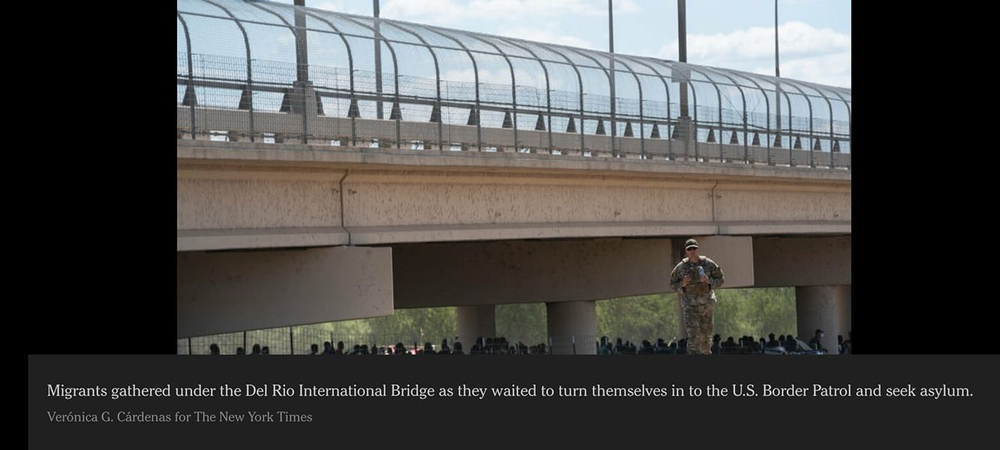

Mobile uploads
I just need to know why when 9000 immigrants show up at our boarder the first thing we think is: "We must get them some protection from the sun." And we immediately find a bridge to shelter them under until we can quickly do better.
Yet when our own people suffer on the streets we ignore them for years.